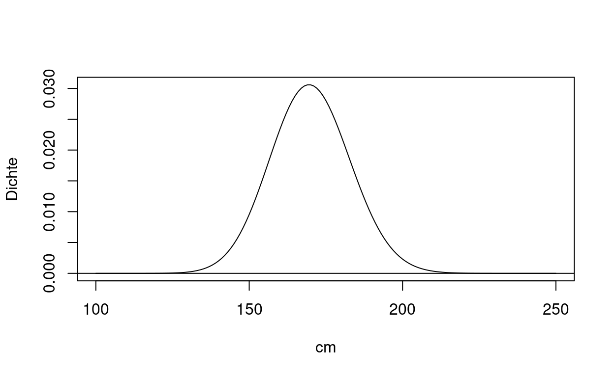
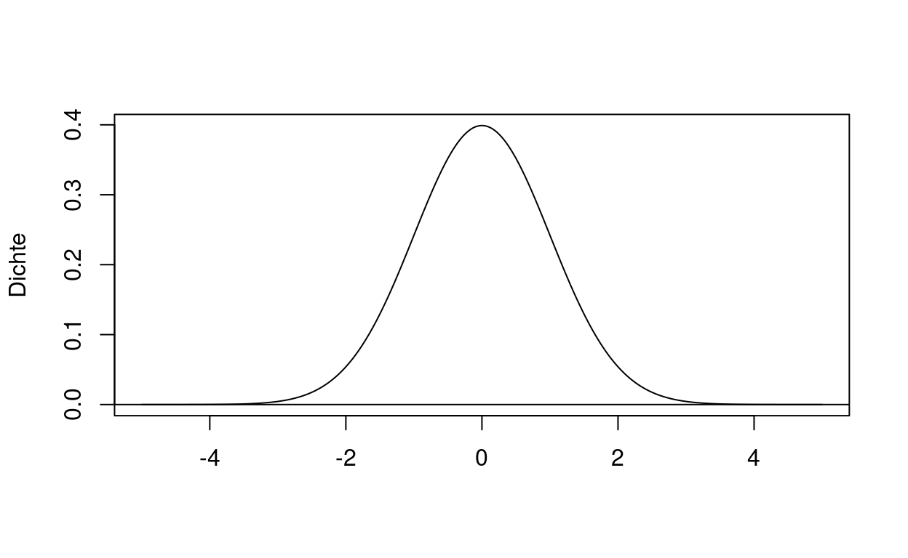

Dieses Tutorial ist ein Schnellkurs durch die Grundlagen statistischer Tests. Wenn Sie nicht allem folgen können, ist das in Ordnung Die nächsten Wochen werden wieder deutlich angewandter. Sinn des Tutorials (neben neuen R-Funktionalitäten) ist es, eine Ahnung zu bekommen worauf statistische Tests beruhen. Der letzte Teil kann auch ausgelassen werden.
Eine Wahrscheinlichkeitsverteilung weist einem Ereignis eine Wahrscheinlichkeit zu. Zum Beispiel ist die Wahrscheinlichkeit bei einem Würfel die Zahl \(4\) zu werfen \(1/6\). Das Ereignis eine \(2\) oder eine \(4\) zu werfen ist dann \(1/6+1/6=2/6=1/3\). Wir weisen also einer Menge ({4} oder {2,4}) eine Zahl zwischen 0 und 1 zu, die uns die Wahrscheinlichkeit angibt mit der das Ereignis eintritt. Diese Funktion wird als \(P(Ereignis)\) notiert, z.B. \(P(X=2)=1/6\), mit X die Zufallsvariable Würfel.
In diesem Tutorial werden wir solche Verteilungen verwenden, um Daten zu simulieren. Das ist hilfreich, um z.B. statistische Methoden kennenzulernen oder sich zu vergewissern, dass eine Statistik auch wirklich macht was wir uns vorstellen. Dies liegt daran, dass angegebene Wahrscheinlichkeiten immer auf angenommenen Verteilungen beruhen.
Zunächst simulieren wir einen Würfel mit sechs Zahlen, die alle gleich wahrscheinlich geworfen werden. Die Funktion sample(x, size) zieht aus dem Vektor x eine Probe der Größe size. Klicke mehrfach auf Run Code, um verschiedene Simulationen zu sehen.
x1 <- 1:6 # Anmerkung: 1:6 gibt uns einen Vektor von 1 bis 6, also 1:6 ist c(1,2,3,4,5,6)
sample(x1,3) # hier werden die Bestandteile der Funktion per Reihenfolge erkannt. Wir könnten auch sample(x=x1,size=3) oder sample(size=3, x=x1) schreiben, nicht aber sample(3,x1) [1] 6 3 5R hat Algorithmen implementiert, um Zufall zu similieren. Falls wir für eine Simulation immer dasselbe Ergebnis haben wollen, können wir den Zufallsalgorithmus per set.seed(seed) initiieren. Dadurch starten wir immerwieder an derselben Stelle mit unserem Zufallsalgorithmus.
Für samplekönnen Details und Hilfe (wie bei allen Funktionen) per Fragezeichen abgerufen werden, also ?sample, z.B. in der Konsole von RStudio. Klicke mehrfach auf Run Code und verändere die Parameter (Inputs).
x1 <- 1:6 set.seed(1)
sample(x1,3)
sample(x1,3)
set.seed(1)
sample(x1,3)Unser Würfel war ein Beispiel für eine diskrete Verteilung, also mit diskreten (“abgetrennten”) Ereignissen. Daneben gibt es auch kontinuierliche Verteilungen, wie z.B. die Gleichverteilung zwischen \(1\) und \(3\) die im nächsten Kasten dargestellt ist.
Wenn wir eine Zahl ziehen, kommt diese aus jedem Abschnitt zwischen \(1\) und \(3\) gleicher Größe mit gleicher Wahrscheinlichkeit. Sie liegt also z.B. mit Wahrscheinlichkeit \(0,25\) zwischen \(1,1\) und \(1,6\). In mathematischer Notation ist das \(P(1,1<X<1,6)=0,25\). Mit gleicher Wahrscheinlichkeit kommt sie aber auch aus zwischen \(1,3\) und \(1,8\) oder \(-5\) und \(1,5\). Diese Wahrscheinlichkeit ist jeweils der Flächeninhalt unter der Dichtefunktion (Wahrscheinlichkeitsfunktion).
Die Funktion unten zeichnet eine Illustration der Verteilung und gibt die Wahrscheinlichkeit, dass eine Zahl zwischen einem beliebigen Minimum und Maximum liegt. Verändere die Parameter, um zu sehen wie sich die Wahrscheinlichkeit verändert
Gleichverteilung_1_3 <- function(x,y){
a <- max(c(x,y))
b <- min(c(x,y))
prob <- round(punif(a,min=1,max=3) - punif(b,min=1,max=3),digits = 2)
plot(x=seq(0,4,.001), y=dunif(seq(0,4,.001),1,3),type="l",xlab="Zahlenbereich",ylab="Dichte")
abline(h=0)
text(.5,.25,paste0("Wahrscheinlich-\nkeit = ", prob))
rect(a,0,b,.5,col = rgb(0.5,0.5,0,1/4))
}Gleichverteilung_1_3(1.1, 1.3)In R können wir per runif(n, min = 0, max = 1) Proben einer Gleichverteilung simulieren. 0 und 1 sind Voreinstellungen für unteres und oberes Limit der Verteilung. n ist die Größe der Probe. Simuliere eine Probe mit n=50 aus einer Gleichverteilung von 1 bis 3 und nenne diese ProbeA. Was ist der Mittelwert von ProbeA?
ProbeA <- runif(50,1,3)
mean(ProbeA)
sum(ProbeA)/length(ProbeA)Ein typisches statistische Vorgehen ist es, einen Parameter (z.B. Mittelwert oder Median) oder die gesamte Verteilung eines Wertes in einer Grundgesamtheit durch eine Probe zu schätzen. Nehmen wir an, uns interessiert die durchschnittliche Körpergröße in Dortmund (Parameter ist also die durchschnittliche Körpergröße). Dafür könnten wir zufällig eine bestimmte Anzahl Dortmunder messen, um dann den Mittelwert als Schätzung zu nehmen. In diesem Abschnitt gehen wir umgekehrt vor: Wir ziehen Stichproben aus einer uns bekannten Verteilung, um zu sehen, wie zuverlässig die Schätzung ist.
Die nächste Graphik zeigt, dass die Körpergröße einer fiktiven Population einer Poisson-Verteilung folgt. Der Durchschnitt liegt hier bei 170cm.

Wir wollen nun eine Stichprobe aus einer Poisson-Verteilung mit Erwartungswert 170 ziehen. Der Befehl dazu ist rpois(n, lambda). Eine Poisson-Verteilung ist vollständig durch den Parameter \(\lambda\) (lambda) bestimmt, der Erwartungswert und Varianz ist. Wenn eine Zufallsvariable X einer Poisson-Verteilung mit Erwartungswert und Varianz \(\lambda\) folgt, notiert man das als \(X \sim Pois(\lambda)\).
Ziehe eine Stichprobe der Groesse 10 und initiiere zuvor die Zufallssequenz per set.seed(42). Was ist der Mittelwert der Stichprobe?
set.seed(42)
Stichprobe <- rpois(10,170)
mean(Stichprobe)Das Gesetz der großen Zahlen sagt uns, dass dieser Mittelwert Richtung Erwartungswert geht, wenn unsere Stichprobe unendlich groß wird. Speichere sechs Stichproben ab, von \(n= 100, n=1000, n=10 000, n=100 000, n=1 000 000\) bis \(n=10 000 000\). Speicher dann die Mittelwerte der Stichproben in einem Vektor ab. Starte mit set.seed(1).
set.seed(1)
Stichprobe_1 <- rpois(100,170)
Stichprobe_2 <- rpois(1000,170)
Stichprobe_3 <- rpois(10000,170)
Stichprobe_4 <- rpois(100000,170)
Stichprobe_5 <- rpois(1000000,170)
Stichprobe_6 <- rpois(10000000,170)
Mittelwerte <- c(mean(Stichprobe_1),mean(Stichprobe_2),mean(Stichprobe_3),mean(Stichprobe_4),
mean(Stichprobe_5),mean(Stichprobe_6))
## oder: Mittelwerte <- sapply(2:7, function(x) mean(rpois(10^x,170)))
MittelwerteWir interessieren uns nun dafür, wie weit wir vom Erwartungswert entfernt liegen. Berechne den Abstand zu 170 und stelle das Ergebnis in einer Grafik dar. Das geht z.B. per plot(x,y). x sind x-Koordinaten eines Vektors und y die y-Koordinaten. Also z.B. plot(c(1,2), c(5,3)), um die Punkte (1,5) und (2,3) einzuzeichnen.
set.seed(1)
Mittelwerte <- sapply(2:7, function(x) mean(rpois(10^x,170)))
StichprobenListe <- list()
MittelwertListe <- list()
set.seed(1)
for (i in 1:10){
StichprobenListe[[i]] <- rpois(10,170)
MittelwertListe[[i]] <- mean(StichprobenListe[[i]] )
}
MittelwertListeAbstand <- 170 - Mittelwerte
plot(2:7,Abstand)
abline(h=0)Um einzuordnen wie gut unsere Schätzung z.B. für die Körpergröße ist, benötigen wir die Varianz, also Genauigkeit, unserer Schätzung. Bei unserer Simulation ist das einfach, da wir sie einfach 5000 mal wiederholen können und so die Varianz gut abschätzen können.
Bei einem einzelnen Datensatz, den wir mühsam gesammelt haben, müssen wir die Varianz aus diesen vorhandenen Daten schätzen. Hierzu gibt es grundsätzlich zwei Möglichkteiten.
Erstens durch das Bilden neuer Samples aus den vorhandenen Daten. Z.B. können wir berechnen wie die durchschnittliche Körpergröße in zufälligen Teilgruppen der Dortmunder Bevölkerung oder neuen Samples (durch Ziehen mit Zurücklegen) der Dortmunder Bevölkerung sich unterscheidet. Hier gibt es verschiedene Methoden, wie bootstrapping, jackknife oder cross-validation, die vor allem bei Vorhersagen oder schwierig zu berechnenden Statitiken angewendet werden.
Traditionell, werden Standardfehler für die in der VWL üblichen statistischen Methoden aber analytisch bestimmt, also anhand der angenommen Verteilungen. Hier ist insbesondere der zentrale Grenzwertsatz hilfreich, der hilft, viele Statistiken asymptotisch (bei unendlich groß werdendem Sample) auf eine normalverteilte Statistik zurückzuführen. Dadurch können wir abschätzen, wie sich eine uns zunächst unbekannte Statistik (z.B. der Mittelwert) erwartungsgemäß verhält, abhängig von der beobachteten Variation im Sample und der Samplegröße.

Sehen wir uns nochmal unsere Poisson-Verteilung an. Um zu sehen, ob unsere Schätzungen sich nach einer Normalverteilung verteilen, simulieren wir zunächst 10 Stichproben der Größe 10 und berechnen jeweils den Mittelwert. Der Einfachheit wegen speichern wir das in einer Liste ab wie folgt.
Wir benutze eine Schleife bei der in jeder Wiederholung eine Stichprobe simuliert wird. Diese Schleife hat die Syntax for( variable in Vektor) { tu was mit variable}. Der Vektor ist beliebig, z.B. die Zahlen 1 bis 10 (1:10) oder eine Liste mit Namen. variable ist eine Variable, die in jeder Wiederholung den neuen Wert aus dem Vektor annimmt (kann auch anders genannt werden). Innerhalb der geschweiften Klammer führen wir dann etwas aus, z.B. 3+variable.
Eine Liste in R ist eine Sammlung beliebiger Objekte, auf die dann per eckiger Klammer zugegriffen werden kann. Z.B. ist Liste[[10]] das zehnte Element einer Liste. Also MittelwertListe[[i]] das i-te Element der Liste MittelwertListe.
Wir odnen jetzt der Liste Elemente zu in einer Schleife, die über i wierderholt und zwei Aktionen innerhalb jeder Wiederholung durchführt: eine Stichprobe aus einer Poissonverteilung mit Mittelwert 170 und Größe 10 wird das i-te Element der StichprobenListe. Zweitens, der Mittelwert der Stichprobe wird das i-te Element der MittelwertListe.
set.seed(1)
StichprobenListe <- list()
MittelwertListe <- list()
for (i in 1:10){
StichprobenListe[[i]] <- rpois(10,170)
MittelwertListe[[i]] <- mean(StichprobenListe[[i]] )
}
MittelwertListeDoppelte Klammern benötigen wir, da wir auf nur ein Element direkt zugreifen. Mit einfachen Klammern greifen wir auf Teile der Liste zu, z.B. Liste[3:5]. Bei MittelwertListe[3] greifen wir zwar nur auf das dritte Elment zu, allerdings auf Ebene der Gesamtliste, d.h. MittelwertListe[3] ist eine Liste aus einem Element: dem Vektor rpois(10,170). Wenn wir den Vektor wollen, müssen wir eine Ebene runter per MittelwertListe[[3]]. Wenn wir aus einer Liste einen Vektor machen wollen, können wir das per unlist(), z.B. MittelwertVektor <- unlist(MittelwertListe). Alternativ können wir auch direkt einen Vektor anlegen wie folgt.
set.seed(1)
MittelwertVektor <- c()
for (i in 1:10){
MittelwertVektor[i] <- mean( rpois(10,170) )
}Benutze nun den alternativen Vektor-code, um 1000 Stichproben der Größe 100 zu ziehen.
set.seed(1)
MittelwertVektor <- c()
for (i in 1:1000){
MittelwertVektor[i] <- mean( rpois(100,170) )
}Wir wollen nun sehen, ob der Abstand zum Erwartungswert tatsächlich ungefähr einer Normalverteilung folgt. Zunächst ziehen wir 170 ab. Dann zeigen wir den Abstand als Histogramm. Wir sehen, das die Verteilung ungefähr um null liegt, aber etwas un-rund und auch mit etwas größerer Verteilung als die Standarnormalverteilung.
set.seed(1)
MittelwertVektor <- c()
for (i in 1:1000){
MittelwertVektor[i] <- mean( rpois(100,170) )
}Abstand <- MittelwertVektor - 170
hist(Abstand)
hist(Abstand,breaks=30)Als nächstes teilen wir durch die Stichprobenvarianz \(\sqrt{\frac{\sigma^2}{n}}\). Das ist die Wurzel der Varianz geteilt durch die Stichprobengröße , also \(\sqrt{\lambda/n}\) oder \(\sqrt{170/100}\). Das ergibt nun asymptotisch eine Teststatistik mit Standardnormalverteilung (asymptotisch, also bei unendlich vielen Wiederholungen), die z-Wert genannt wird. Das hat den Vorteil das wir unsere ursprüngliche Stichprobe mit einer Verteilung in Bezug gesetzt haben, die wir sehr gut kennen. Dadurch können wir beurteilen, wie wahrscheinlich es ist einen bestimmten Wert in der Stichprobe zu beobachten, falls alle Annahmen gegeben sind. Für weitergehende Infos zu Zweck und Konstruktion, siehe auch die Wikipediaseite Standardisierung.
Abstand <- MittelwertVektor - 170
StandardisierterAbstand <- Abstand / sqrt(170/100)
hist(Abstand)
hist(Abstand,breaks=30)Wir beobachten jetzt eine Probe mit Mittelwert 167 und Größe 100. Wie wahrscheinlich ist es, dass diese aus derselben Bevölkerung stammt (gleiche Verteilung)? Zur Erinnerung, mit Mittelwert und Varianz \(170\) und \(n=100\), erhalten wir den z-Wert für \(x\) als \(\frac{x-170}{sqrt(170/100)}\). Die Wahrscheinlichkeit, dass eine Standardnormalverteilung kleiner als a ist, ist kann per pnorm(a) abgefragt werden (\(P(Z<a)\)).
set.seed(1)
a <- (167-170) / sqrt(170/100)
pnorm(a)Tatsächlich, haben wir bei unseren Stichproben kaum einen Mittelwert beobachtet, der kleiner ist als 167. Wir haben allerdings ein paar, d.h. es ist nicht unmöglich, dass diese Stichprobe auch aus unserer Verteilung stammt, es ist nur nicht sehr wahrscheinlich.
Für die abschließende Aufgabe legen Sie ein neues R-Skript in RStudio an mit Namen DatenSimulieren.R.
?set.seed)?rnorm oder Standardnormalverteilungstabelle)1.5 geschrieben (Punkt statt Komma))?pnorm, lower.tail=TRUE beachten)